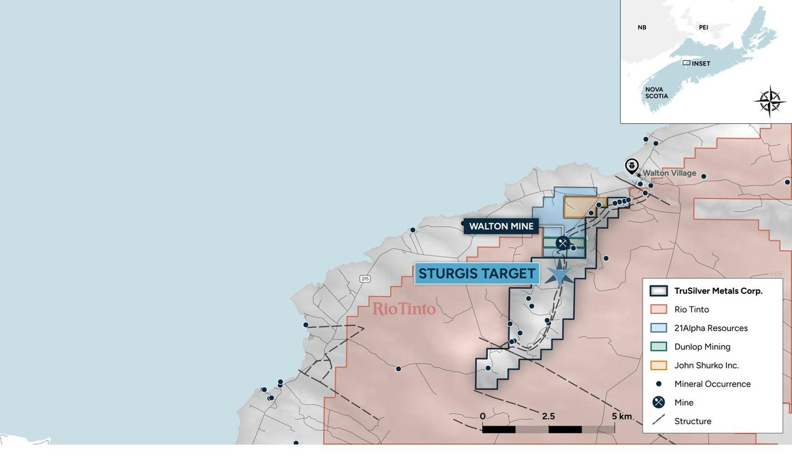

The move
What Rio Tinto's move actually says.
Staking is how a company gets in the door on a basin. It's cheap, it's fast, and it buys room to look before anyone has to commit to anything.
What it tells us is that a team with a global exploration budget ran this same basin through its own screens and decided the ground was worth holding.
A Rio Tinto spokesperson told CBC News the company is running an early-stage exploration program in Nova Scotia, with their focus being on identifying potential copper resources.1
Copper is what they went looking for.
Here's the whole fact, in two lines.
Rio Tinto took every open claim in this basin.1
Ours weren't open, because we got there first.

The province
Nova Scotia spent three years turning back into a mining province.
The Walton Mine was historically one of the largest barite producers in Canada.It ran for the better part of forty years, and when it closed the ground around it went quiet.4
That's been changing.
In March 2024 the province published its Critical Minerals Strategy and took it to the PDAC convention in Toronto.5
Through 2025 Premier Tim Houston carried that pitch to investors himself, telling them Nova Scotia could be a reliable, ethical, sustainable source of the materials the world is short of. The province also launched NovaMINE, a single portal built to move mine permitting through faster.63
By December the CBC was reporting a jump in exploration licence applications across the province, and naming Hants County as one of the two hotspots.1
The Premier was back at PDAC in February. By June, mining was one of six sectors the province had put growth funding behind.78
A province doesn't hand you ore. It hands you permits, data, infrastructure, and neighbours with capital. Nova Scotia has just spent the last three years getting better at all four.
And the ground Walton sat on is still there.
Our silver
So what have we actually got?
The Walton Mine sits nearly adjacent to our ground. Before it took on water in 1970, its mill feed ran between 350 and 933 grams of silver per tonne, and individual holes ran far higher: one cut 5,754 grams over 12.8 metres.49
For a mine nobody talks about anymore, that's a loud number.
In 2023 we drilled the same rock formation on our side of the line, and the core came back carrying silver and copper.3
The hole did what it was drilled to do. It proved the structural model.2
His own presentation calls it drill ready. That's what comes next.2

The metal
Why anyone is looking at silver right now.
Silver set an all-time high above $120 an ounce in January.10
It's since come off that high.
As of July 28, 2026, silver was still trading well above its 2025 average. In 2025 it broke $50 an ounce for the first time since 1980.11
Here's what sits underneath the price: a glaring deficit. The world has used more silver than it produced for six years running.11
To cover the gap, it's been pulling metal out of storage. Roughly 762 million ounces of it since 2021.11
And most silver isn't mined on purpose.
Only about a quarter of world mine supply comes from mines built to produce silver. The rest turns up as a by-product of copper, lead and zinc.11
So when the price moves, supply mostly can't follow. You can't just ramp up a by-product.
In November 2025 the United States added silver to its critical minerals list.11
Meaningful new mine supply eventually has to come from ground nobody is producing from yet. Which brings us back to this basin.
The ground
Here's what's ours.
Our oldest licence here was staked in 2018.12
That's six years before the province published its critical minerals strategy, and a full seven years before Rio Tinto arrived.
We didn't move in next to them. They moved in around us.1
Seventy claims across three exploration licences, about 1,120 hectares, held outright, with no NSR.12
Roughly 70 kilometres northwest of Halifax, with paved highway to within a short gravel run of the property.12
And we already hold a Crown land exploration permit that runs to March 2028, covering drilling at three locations.3
Phase 1 is expanded AMT geophysics and at least two follow-up drill holes.12
The copper
There's a second metal in our core.
We drilled this ground in 2023, and the hole that tested our structural model came back carrying silver and copper.3
The upper zone, from 359 to 377 metres, ran 12.15 g/t silver over 10.5 metres, including 0.6 metres at 149 g/t, with 0.044% copper over 18 metres. The lower zone, from 502 to 552 metres, ran 48.8 g/t silver over 19 metres, with 0.091% copper over 50 metres, including 8 metres at 0.35%.2
Today, this is a silver story, and that's the right way to read it. We're not going to stand here and tell you we're a copper company.
We'd just note what the major in this basin came looking for, and we have it too.
The people
Our people have done this before.
Peter Hancock sits on TruSilver’s board. He led the commissioning and ramp-up of a US$7 billion mine, and he runs a listed nickel and cobalt producer today.1213
He is also a Nova Scotian.
The mine was Koniambo Nickel in New Caledonia, where he was President from 2011 to 2016. Since December 2025 he has been interim Chief Executive Officer of Sherritt International, and he has sat on its board since 2021.1213
He took his engineering degrees at the Technical University of Nova Scotia, he is based in Halifax, and earlier in his career he ran the Brunswick Smelter in Belledune and led technology and business development for Noranda Zinc.121413
Across more than thirty years in mining, most of it with Glencore, he managed the Murrin Murrin nickel-cobalt operations in Western Australia. He sits on the board of Sibanye Stillwater today.12
Matt Rees joined in September 2026 as a director, and co-founder Jim Michaelis stays on as Strategic Technical Advisor. Rees was Chief Geologist at IAMGOLD from 2018 to 2023, part of the team that discovered or acquired roughly 29 million ounces of gold, including the Nelligan discovery in Quebec. Before that, seventeen years at Noranda-Falconbridge.15
Penny White and William White co-founded Tiger Gold. Rick Huang was its CFO when it went public on the TSX Venture Exchange through a qualifying transaction.2
They're doing it again here.
At listing, 25,214,848 of our shares sit under escrow or voluntary three-year restrictions, and another 5,106,840 carry other trading restrictions.16
That leaves a public float of 12,222,990 shares out of 42,544,678 outstanding. Insiders hold 39%.16
The financing closed in September 2026 at C$2,510,090, and about C$305,000 of it was our directors and CFO buying alongside everyone else.15
We'll leave you with this thought. The door on this basin closed in late 2025, and we'd been holding our ground for seven years before it did.
Now you're at the beginning of our story, and how you handle that timing is up to you.